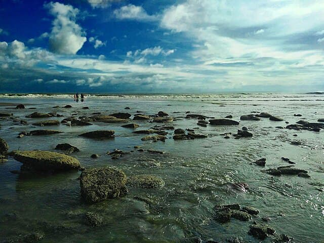
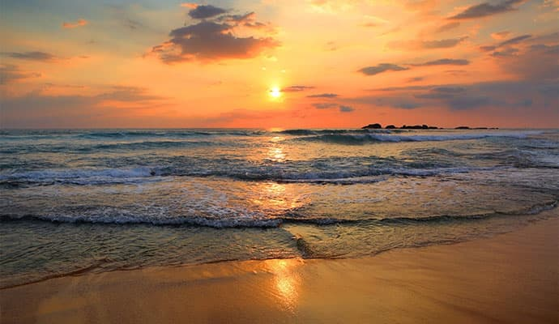
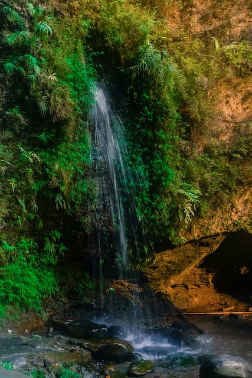
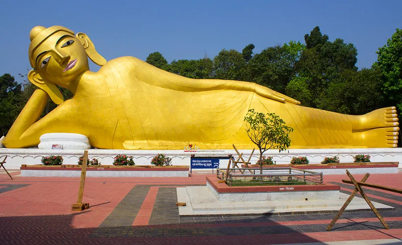

Top Tourist Attractions
Inani Beach

Inani Beach, with its pristine sand and crystal-clear waters, is perfect for a peaceful retreat. It offers great views and a serene atmosphere.
Laboni Beach

Located near the town center, Laboni Beach is popular for its lively atmosphere, street food, and fun activities. A great place for tourists to enjoy the sea.
Himchari Waterfall

Located near the coast, Himchari Waterfall is a beautiful spot surrounded by lush greenery, perfect for nature lovers and adventure seekers.
Cox's Bazar Railway Station
Cox's Bazar Railway Station offers easy access to the city by rail, and its historical charm makes it a unique destination for tourists arriving by train.
Radiant Fish World

Radiant Fish World is a stunning aquatic park where visitors can observe and learn about various marine species. It's a perfect stop for families and nature lovers.
Ramu Buddhist Temple

Ramu is home to several Buddhist temples, and the Ramu Buddhist Temple is a significant one for those looking to explore local culture and heritage.